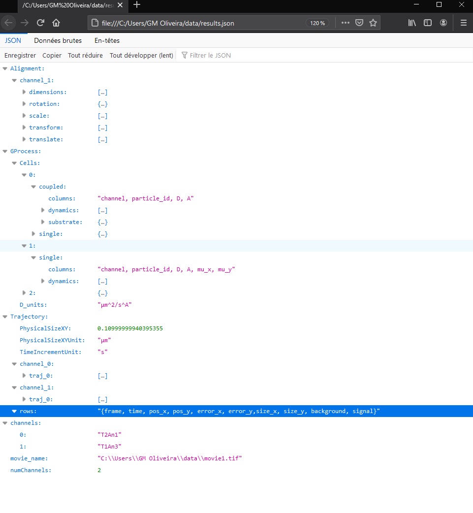

Saving results
Once the analysis is complete, the user can save results by navigating to "File > Save as..." or the key combination "Ctrl + S". By its flexibility, "ease-of-use" and wide range of programming languages that can parse it, the JSON format was chosen. The final file will look as in the next image.
In a hierarchical organization, the file will show the original movie name and basic metadata on which the analysis was made. It will present enhanced non-aligned trajectories per channel (the contents of each row are identified) and inferred diffusion parameters. GProcess will always present results determined from individual trajectories. In cells (or groups) containing multiple spots, the coupled analysis will be provided along with substrate data. Finally, the alignment plugin will save its own data, that is, image dimensions and optimal translation, scaling and rotation parameters. For convenience, a ready-to-use transformation matrix is also provided. This matrix can be directly used to alignment trajectories if necessary.